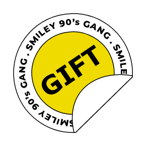

你知道嗎？當人們在做一件事情時，其實會花上80%的時間享受失敗過程。
遇到問題、失敗、再嘗試，每次循環都讓你在迎戰困難時，獲得更多技能與成長。本次特別企劃，提出面對失敗或挫折時，可能的反應態度與解決問題方式。現在，就透過設計師的日常疑難雜症，來看看自己會是什麼樣的失敗人格吧！

摔累了嗎？
偶爾休息是為了走更長遠的路，在衝撞失敗的過程感到身累心煩時，一張有著“ Try again, fail again, fail better. ”無畏精神的滑板椅，除了給你片刻充電時光，也提醒你繼續勇往直前！
本滑板椅的奧妙之處，便是藏於民間，雖是無法隨手可得的限量款，但能坐能放能裝飾，能擺能拍能耍酷，可謂居家旅行，必備良品！